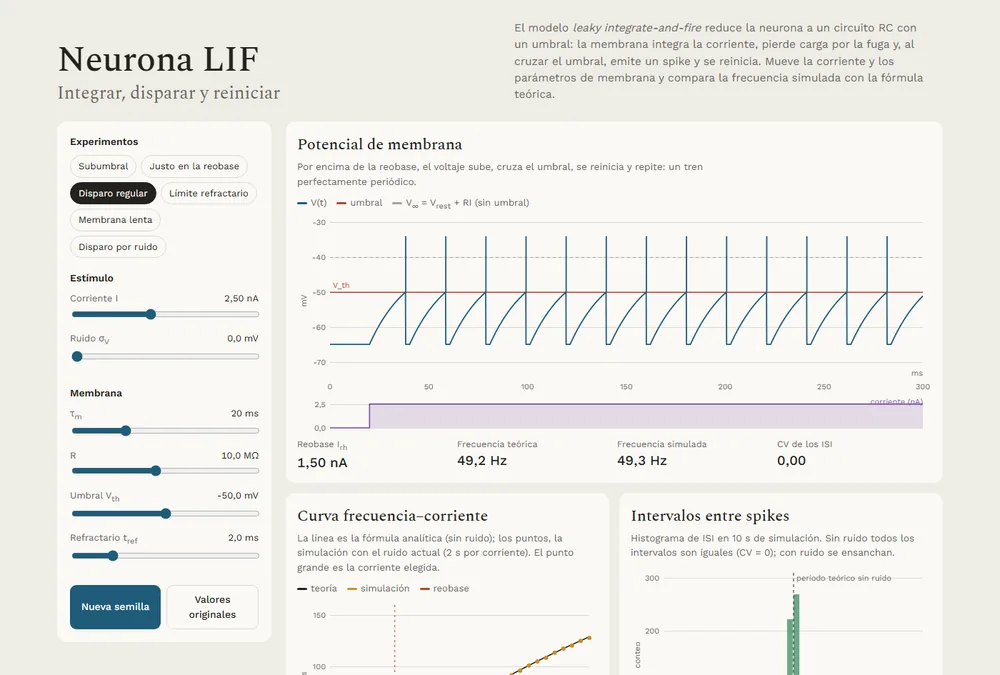
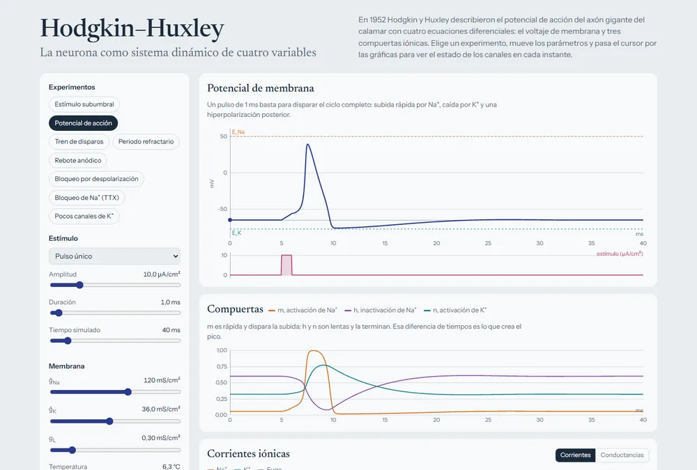
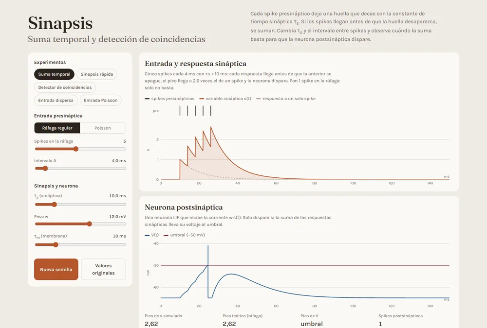
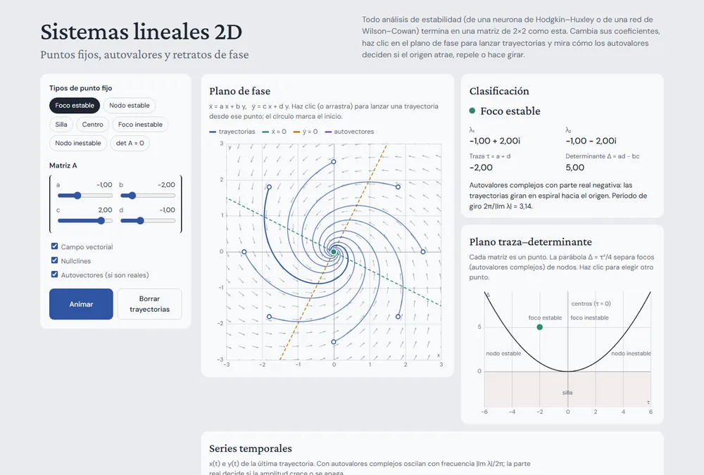
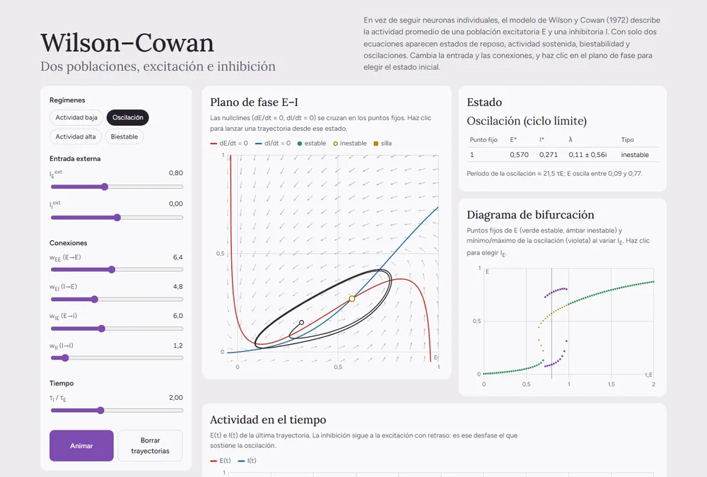
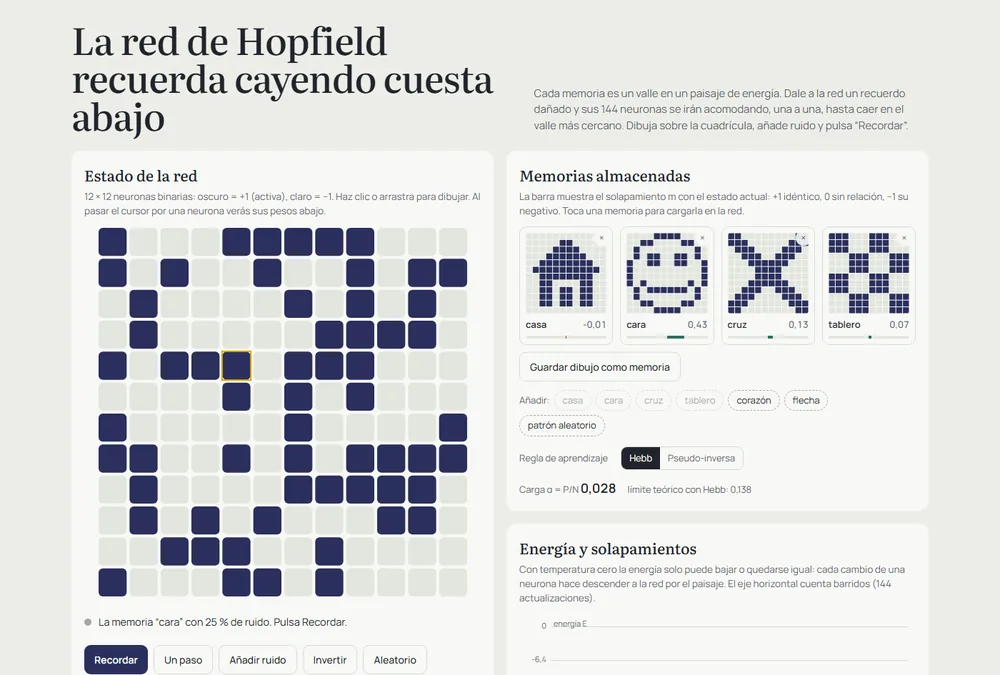
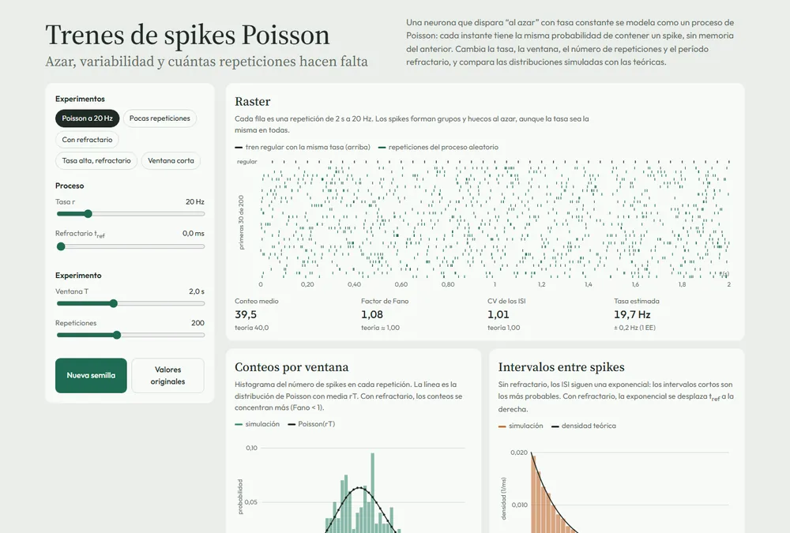
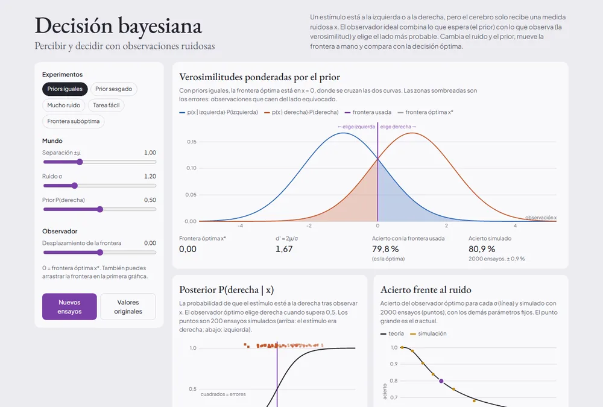
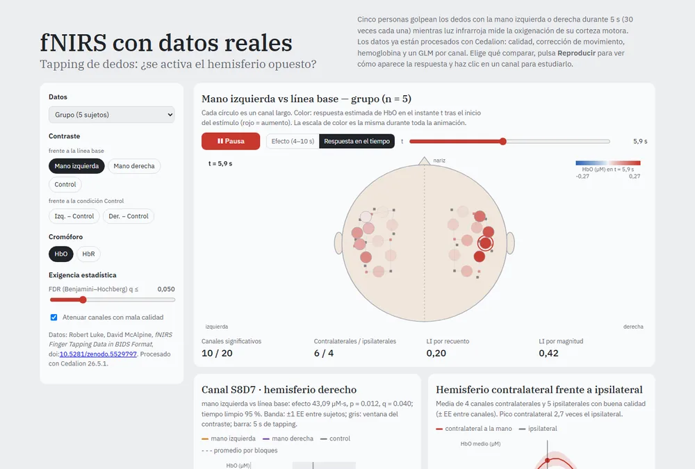

Neurona LIF
Integrar, disparar y reiniciar. Curva f-I simulada frente a la analítica, reobase y disparo irregular por ruido.

Hodgkin-Huxley
La neurona como sistema dinámico: potenciales de acción, compuertas, corrientes iónicas y espacio de fase.

Sinapsis
Suma temporal y detección de coincidencias en un LIF postsináptico.

Sistemas lineales 2D
Puntos fijos y estabilidad: plano traza-determinante, autovalores y trayectorias.

Wilson-Cowan
Excitación, inhibición y oscilaciones: nullclines, ciclos límite, biestabilidad y bifurcaciones.

Red de Hopfield
Memoria como paisaje de energía: guardar, recuperar y degradar patrones.

Trenes de spikes Poisson
Azar y variabilidad: histogramas de conteos e ISI, factor de Fano y CV.

Decisión bayesiana
Percibir con ruido: prior, posterior, frontera de decisión y acierto Φ(d′/2).

fNIRS con datos reales
Tapping de dedos en 5 sujetos: mapa de activación, lateralización, respuesta del GLM y animación en el tiempo.